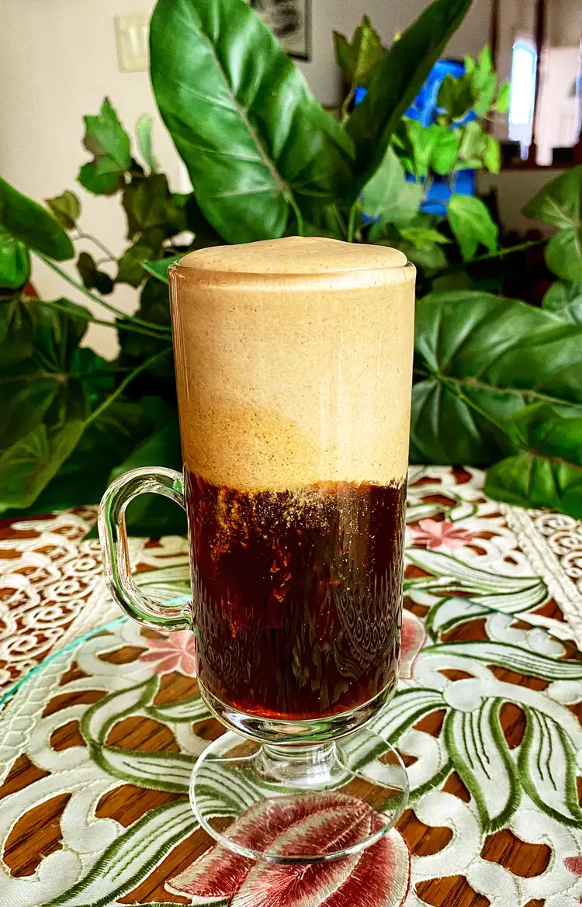

Egg Coffee

Description
Egg coffee is traditional Vietnamese treasure. It is made from
egg yeallow and condensed milk. The coffee standalone is made
by vietnamese coffee preparation style
Ingridients
- Two Egg yolks
- Two tablesoon sweetened condensed milk
- Three teaspoon of 100% arabica
Steps
-
Prepare Vietnamese brewed coffee
-
Place egg yolk and condensed milk in a tall jar
Whip with a milk frother until soft peaks form
-
Pour hot coffee into a mug and top with frothed milk
-
Don't mix coffee with frothed milk, eat it with teaspoon and drink after it.